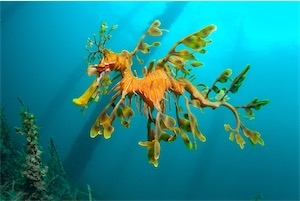

Leafy Seadragon
Popularly known as "leafies", it is the marine emblem of the state of South Australia and a focus for local marine conservation.
- Scientific Name: Phycodurus eques
- Average Length: 20–24 cm
- Average Lifespan: 2 -3 years
- Distribution: Coasts of Australia
Much like the seahorse, the leafy dragon's name is derived from its resemblance to another creature (in this case, the mythical dragon). They feed on plankton and small crustaceans.